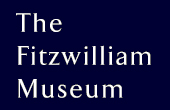

|
 Old Kingdom Art and Archaeology 2009Latest newsPapers 28 Jan 09The response to the call for papers has been very large, and we are very pleased. Anyone wishing to have a paper considered now must contact us first, via the email address fitzmuseum-okconference [at] lists.cam.ac.uk. You may of course still register to attend the meeting. Conference schedule 16 Jan 09We are delighted to say that the amount of interest in the meeting and the number of papers submitted has been very high. so high that we are going to have to modify the previous schedule. Thus we are planning beginning the formal part of the conference on the afternoon of what was going to be the registration day, Wednesday 20 May 2009. It is thus recommended that colleagues should try and arrive on the Tuesday. We are aware that this could affect travel plans, and so we wish to hear from those for whom it might cause difficulties. We're sorry that we are proposing this change, but it is due to the success of the first call for papers! Titles and abstracts 16 Jan 09For the scheduling, we need to have full titles and abstracts from those presenting papers, so could each of you please supply by 15 February: --The full title of your paper We are requesting longer abstracts if possible to help all participants to be better prepared for the meetings. We expect to allocate the normal 20 minutes for each paper with 5 minutes for discussion. |